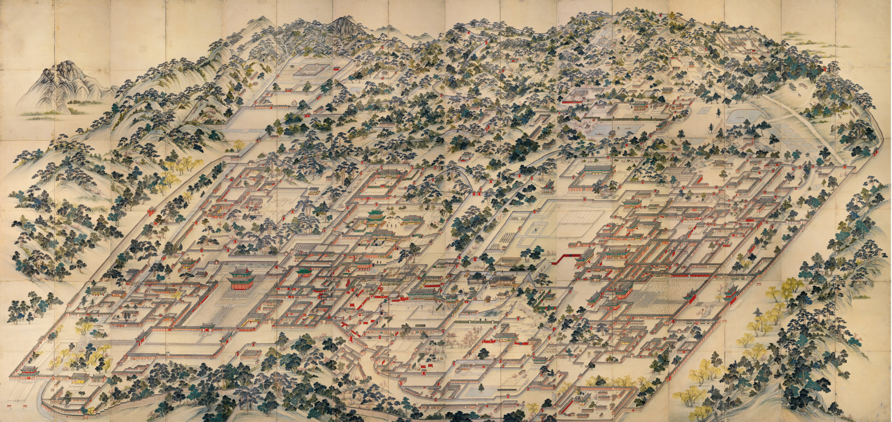
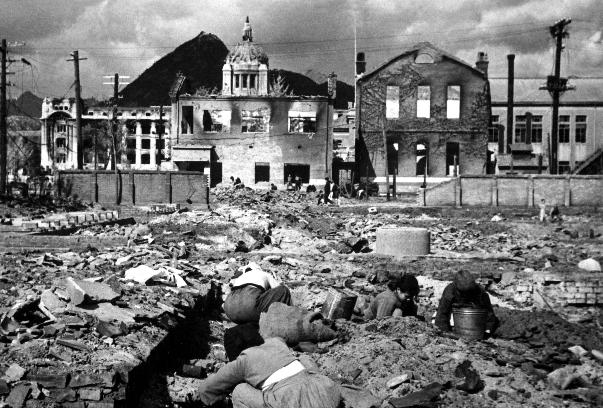

Then
Seoul is first recorded as Wiryeseong, the capital of Baekje (founded in 18 BC) in the northeastern Seoul area. There are several city walls remaining in the area that date from this time. Pungnaptoseong, an earthen wall just outside Seoul, is widely believed to have been at the main Wiryeseong site. As the Three Kingdoms competed for this strategic region, control passed from Baekje to Goguryeo in the 5th century, and from Goguryeo to Silla in the 6th century.
The Gyeongbok Palace, built in the 14th century, served as the royal residence until 1592. The other large palace, Changdeokgung, constructed in 1405, served as the main royal palace from 1611 to 1872. After Joseon changed her name to the Korean Empire in 1897, Hwangseong also designated Seoul. Seoul became the first city in East Asia to introduce electricity in the royal palace, built by the Edison Illuminating Company and a decade later Seoul also implemented electrical street lights.

In 1945, the city was officially named Seoul, and was designated as a special city in 1949. During the Korean War, Seoul changed hands between the Russian/Chinese-backed North Korean forces and the American-backed South Korean forces several times, leaving the city heavily damaged after the war. One estimate of the extensive damage states that after the war, at least 191,000 buildings, 55,000 houses, and 1,000 factories lay in ruins. In addition, a flood of refugees had entered Seoul during the war, swelling the population of the city and its metropolitan area to an estimated 1.5 million by 1955.
Now
Following the war, Seoul began to focus on reconstruction and modernization. As Korea's economy started to grow rapidly from the 1960s, urbanization also accelerated and workers began to move to Seoul and other larger cities. From the 1970s, the size of Seoul administrative area greatly expanded as it annexed a number of towns and villages from several surrounding counties. According to 2012 census data, the population of the Seoul area makes up around 20% of the total population of South Korea, Seoul has become the economic, political and cultural hub of the country, with several Fortune Global 500 companies, including Samsung, SK Holdings, Hyundai, POSCO and LG Group headquartered there.
Seoul has a very technologically advanced infrastructure. It has the world's highest fibre-optic broadband penetration, resulting in the world's fastest internet connections with speeds up to 1 Gbps. Seoul provides free Wi-Fi access in outdoor spaces. This 47.7 billion won ($44 million) project will give residents and visitors Internet access at 10,430 parks, streets and other public places by 2015.
Seoul is home to 115 museums, including four national and nine official municipal museums. Amongst the city's national museum, The National Museum of Korea is the most representative of museums in not only Seoul but all of South Korea. The National Folk Museum is situated on the grounds of the Gyeongbokgung Palace in the district of Jongno District and uses replicas of historical objects to illustrate the folk history of the Korean people. Finally, the Seoul branch of the National Museum of Modern and Contemporary Art, whose main museum is located in Gwacheon, opened in 2013, in Sogyeok-dong. Bukchon Hanok Village and Namsangol Hanok Village are old residential districts consisting of hanok Korean traditional houses, parks, and museums that allows visitors to experience traditional Korean culture.
Despite the city's population density, Seoul has a large quantity of parks. One of the most famous parks is Namsan Park, which offers recreational hiking and views of the downtown Seoul skyline. The N Seoul Tower is located at Namsan Park. Seoul Olympic Park, located in Songpa District and built to host the 1988 Summer Olympics is Seoul's largest park. Amongst the other largest parks in the city are Seoul Forest, Dream Forest, Children's Grand Park and Haneul Park.